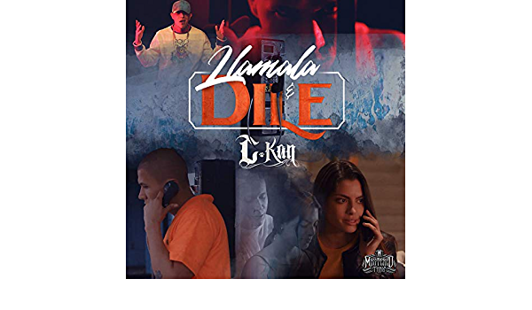
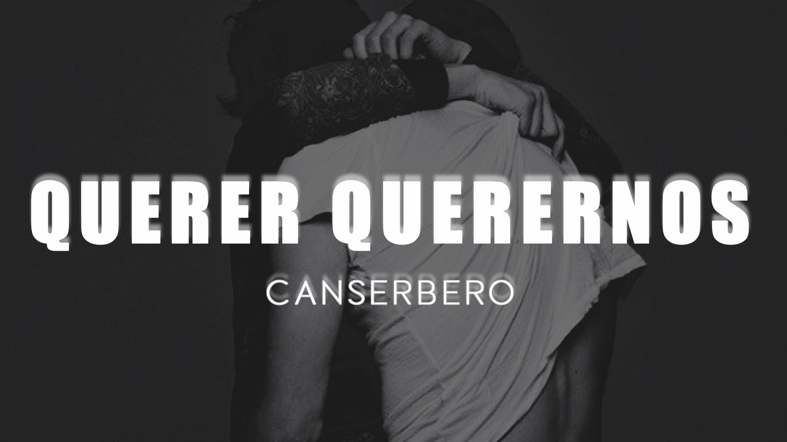
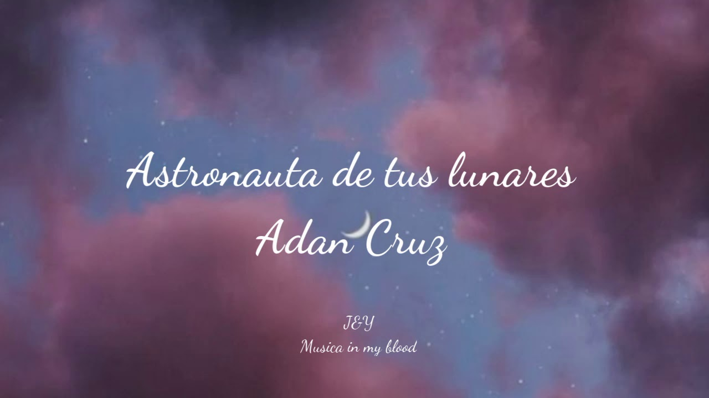
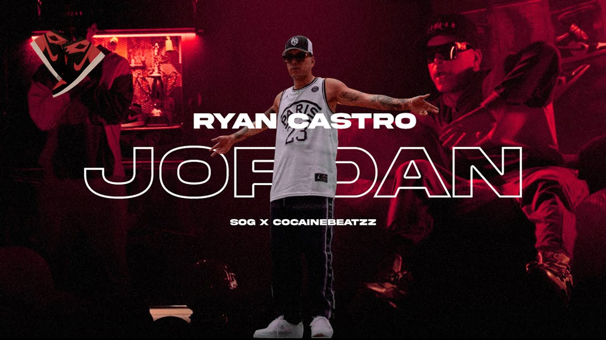
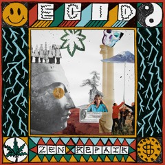
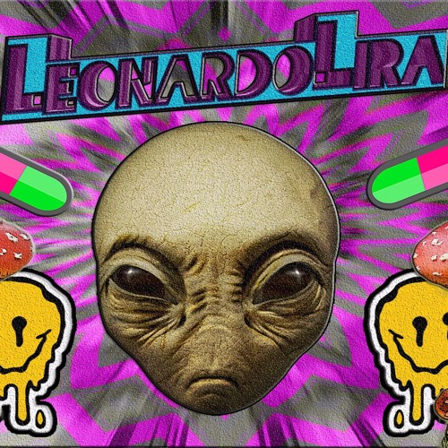
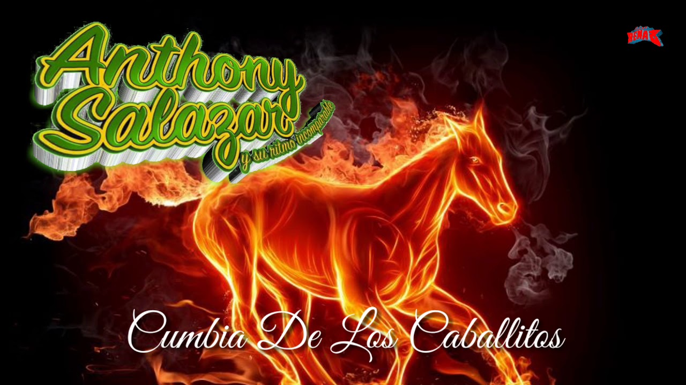
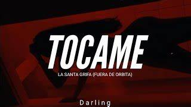

EL PORTAL DE MUSICA
la música en las que se le da un mayor valor a esta forma de arte.
-NietzscheMisión
"tienes a tu disposición mucha de información para conocer las últimas tendencias musicales y obtener una visión general de las páginas de música más importantes"
Lo mas Escuchado
- C Kan-LLAMALA Y DILE
- Zona Ganjah-VIBRA POSITIVA
- Canserbero- QUERER QUERERNOS
- Canserbero-MUNDO DE PIEDRA
- Adan Cruz- ASTRONAUTA DE TUS LUNARES
- Justin Quiles- GUCCI FENDI
- Ryan Catro-JORDAN
- Leonardo Lira-ACID TRACK
- Leonardo Lira-LSD!
- Canserbero-CUANDO VAYAS CONMIGO
- Leonardo Lira-HORA DE FUMAR!
- Grupo Super T-LA CUMBIA DE LOS CABALLOS
- La Santa Grifa-TOCAME
- La Santa grifa-LA LUNA SABE
- La Santa Grifa-PIEL CON PIEL
- Pure Negga-TU PIEL
- Pure Negga-CNV SOUND, VOL. 14
...







